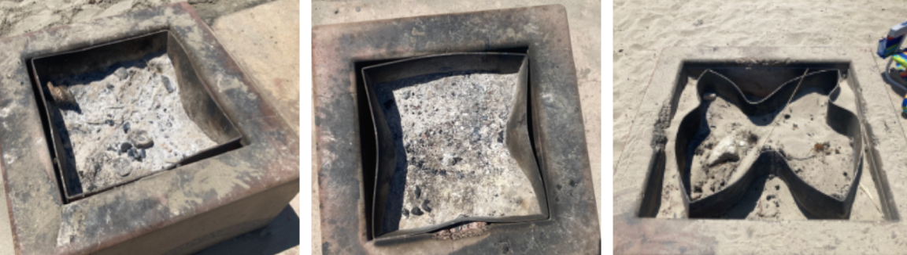
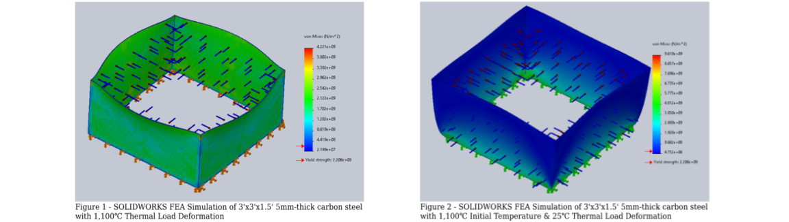

MAE 160 Butterfly Project
Project: Analysis of Butterfly-Shaped Deformation of Steel Fire Pit
The goal of the project was to apply the knowledge acquired in MAE 160 Mechanical Behavior of Materials to explain the tendency of the sides of a fire pit to collapse inwards into a comprehensive research report.
Determined Mechanisms behind Deformation
Given states of partial deformation between the undeformed and fully deformed states, it was unlikely that a single event would have resulted in the massive deformation that causes the “butterfly” shape. During periods of increased temperature, diffusion of atoms across the grain boundaries in the metal takes place, resulting in creep. Evidence of multiple stages of deformation align with the time and temperature-dependence of creep failure.
FEA Analysis
Two different simulations were conducted to model the fire pit as it heats up and cools down. Conducting an FEA analysis of a 5 mm thick 3’ x 3’ x 1.5’ carbon steel model of the fire pit with a high temperature thermal load indicates that the resulting deformation does not result in the “shrunken” shape in the fully deformed photos. Instead, the constraints force the edges of the fire pit to bend outward from the center.
